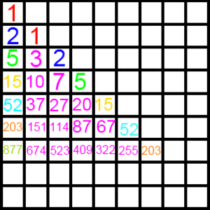

Another Sequence of Sequences
A sequence of numbers is made like this:
We start with $1$ and we rewrite $1$ in the diagonal column. Then another number is made by filling a box with its top and right neighbors' sum. And when we arrive at the 1st row, we rewrite the result in the next box in the diagonal column, and continue this process.

We then note the numbers of the first row follow the sequence below:
$1, 2, 5, 15, 52, 203, 877, 4140, \ldots$
Now a function $f(x)$ is defined as,
$$ f(x) = x + \frac{2x^2}{2!} + \frac{5x^3}{3!} + \frac{15x^4}{4!} + \frac{52x^5}{5!} + \frac{203x^6}{6!} + \ldots $$
Simplify $f$